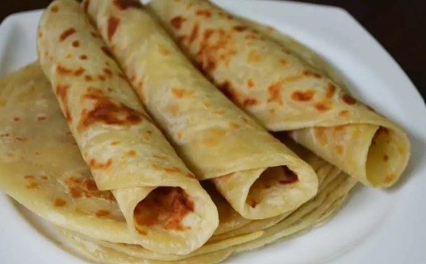
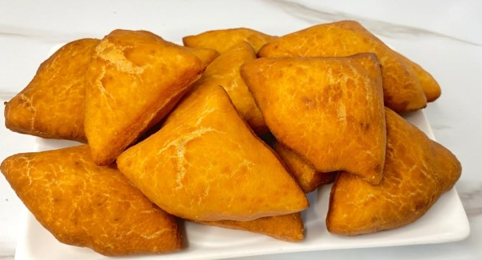
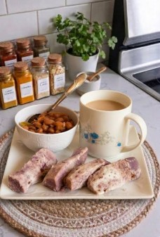

Welcome to Mama Njeri's Kitchen, the heart of authentic Kenyan cuisine in Nairobi.
It is run by Mama Njeri herself, we pride ourselves on serving freshly prepared meals made from locally sourced ingredients.
Wether you are looking for a hearty breakfast or a comforting lunch,our kitchen feels just like home.



This week's special is our famous slow-cooked goat meat wet fry,served with aromatic Pilau rice and a side of freshly diced kachumbari salad.
| Category | Dish | Description | Price (Ksh) |
|---|---|---|---|
| Breakfast | Chapati & Tea | Soft layered chapati with spiced chai | 150 |
| Mandazi (3 pcs) | Sweet fried dough with a hint of cocconut | 100 | |
| Nduma & Tea | Boiled arrowroots served with milky tea | 200 | |
| Lunch & Supper | Ugali & Sukuma wiki | Maize meal with sauteed collard greens | 250 |
| Pilau and kachumbari | Spiced rice with fresh tomato-onion salad | 350 | |
| Githeri | Slow-cooked maize and beans stew | 200 | |
| All prices are in Kenya shillingsand include VAT. |
| Day | Opens | Closes |
|---|---|---|
| Monday-Friday | 6:30 AM | 9:00 PM |
| Saturday | 7:00 AM | 10:00 PM |
| Sunday | Closed | |
We are located in the vibrant center of Naironi City, along Moi Avenue, directly opposite the National Archives at Mama Njeri Towers, Ground Floor.
Phone: +254712345678| Email: info@mamanjerikitchen.co.ke